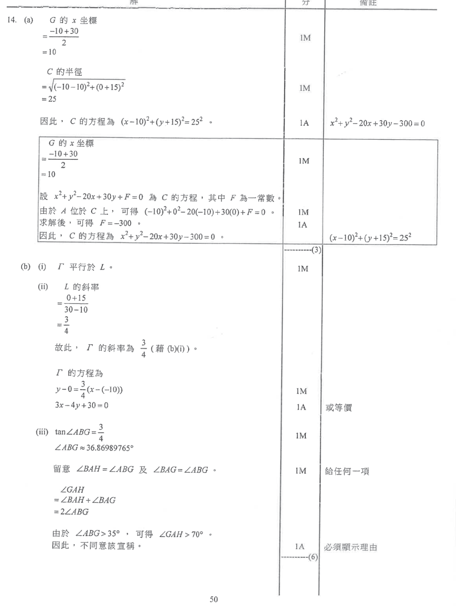

2020 DSE 數學 Paper 1 第 14 題 評卷參考＋詳解
題目（中文卷）
點 $A$ 及點 $B$ 的坐標分別為 $(-10,0)$ 及 $(30,0)$。圓 $C$ 通過 $A$ 及 $B$。將 $C$ 的圓心記為 $G$。已知 $G$ 的 $y$ 坐標為 $-15$。
(a) 求 $C$ 的方程。
(b) 直線 $L$ 通過 $B$ 及 $G$。另一直線 $\ell$ 平行於 $L$。設 $P$ 為直角坐標平面上的一動點使得由 $P$ 至 $L$ 的垂直距離等於由 $P$ 至 $\ell$ 的垂直距離。將 $P$ 的軌跡記為 $\Gamma$。已知 $\Gamma$ 通過 $A$。
(i) 描述 $\Gamma$ 與 $L$ 之間的幾何關係。
(ii) 求 $\Gamma$ 的方程。
(iii) 假定 $\Gamma$ 與 $C$ 相交於另一點 $H$。某人宣稱 $\angle GAH < 70^\circ$。你是否同意？試解釋你的答案。
English version（英文卷題目）
The coordinates of the points ( A ) and ( B ) are ((-10, 0)) and ((30, 0)) respectively. The circle ( C ) passes through ( A ) and ( B ). Denote the centre of ( C ) by ( G ). It is given that the ( y )-coordinate of ( G ) is (-15).
(a) Find the equation of ( C ). (3 marks)
(b) The straight line ( L ) passes through ( B ) and ( G ). Another straight line ( \ell ) is parallel to ( L ). Let ( P ) be a moving point in the rectangular coordinate plane such that the perpendicular distance from ( P ) to ( L ) is equal to the perpendicular distance from ( P ) to ( \ell ). Denote the locus of ( P ) by ( \Gamma ). It is given that ( \Gamma ) passes through ( A ).
(i) Describe the geometric relationship between ( \Gamma ) and ( L ). (2 marks)
(ii) Find the equation of ( \Gamma ). (2 marks)
(iii) Suppose that ( \Gamma ) cuts ( C ) at another point ( H ). Someone claims that ( \angle GAH < 70^\circ ). Do you agree? Explain your answer. (2 marks)
官方評卷參考（Marking Scheme）

考評報告
良好。很多考生能求得C的方程。良好。很多考生能描述Γ與L之間的幾何關係。部分考生誤以Γ為L的垂直平分線。平平。很多考生忽略了Γ通過A,因此他們未能求得Γ的方程。甚差。大部分考生未能求得∠ABG,因此他們未能解釋為什麼$\angle GAH>70^{\circ}$。